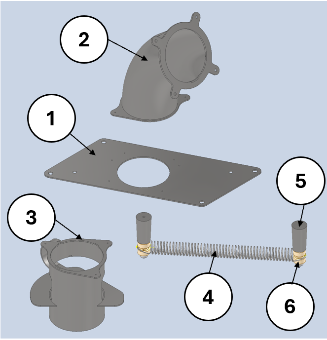

The feeding subassembly regulates the flow of oranges from the entry tubes and releases them one at a time onto the fruit support. Rollers on the extraction/synchronisation system push open the yellow sync spring to allow a single orange to drop. The whole subassembly is mounted to a tan mount plate , which is then mounted onto the feeder body.
Assembly structure
Mount plate — tan; base of subassembly; mounts to feeder body.
Entry tube assembly (welded unit, riveted to mount plate):
Flanged 90° entry tube — green; curved tube where oranges roll down to the feed.
Entry tube flange — pink.
Entry tube mount plate — light green.
Flanged straight tube and spring guide (welded unit, riveted to mount plate):
Flange — beige.
Straight tube — purple.
Spring guide — dark blue/teal.
Sync spring mechanism — yellow sync spring; pushed open by rollers on the extraction/sync system to drop an orange onto the fruit support. The sync spring is mounted to 2× dark green sync spring mounts on two pink rollers.
Colour key (this subassembly’s figures)
Applies only to the CAD views in this section. Other subsystems use their own colour sets.
Colour
Component
Mount plate — tan; subassembly base; mounts to feeder body
Entry tube flange — pink; and pink rollers (sync spring mounts)
Entry tube mount plate — light green; rivets/welds the 90° tube assembly to the mount plate and sets tube position.
Flange (straight tube assembly) — beige; bolted interface for the straight tube/spring-guide unit.
Straight tube — purple; guides fruit to the sync spring opening and sets the release location above fruit support.
Spring guide — dark blue/teal; locates the sync spring path and prevents snagging/misalignment.
Sync spring — yellow; pushed open by extraction/sync rollers
Sync spring mounts — dark green (2×); clamp/locate the spring and transfer roller force into spring deflection.
Figures
The exploded labeled view below is a static reference and is not part of the rotating gallery. The numbered carousel shows the current set: assembly with CIP nozzle installed, standard orthographic views, sync-spring detail, and pusher / roller vs sync-spring interaction.
Exploded / labeled assembly (static)

Exploded, labeled view of major components (reference only — excluded from the gallery below).